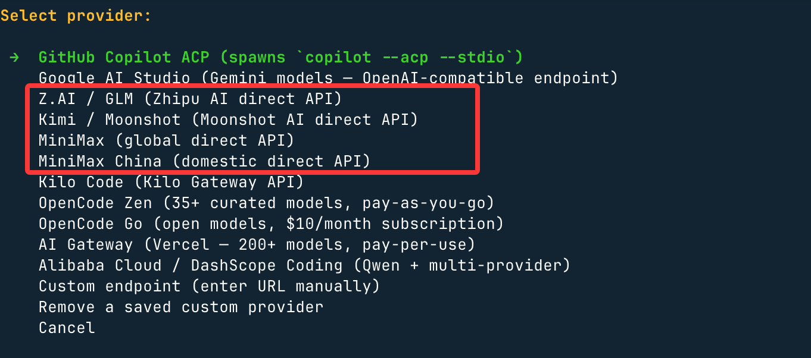
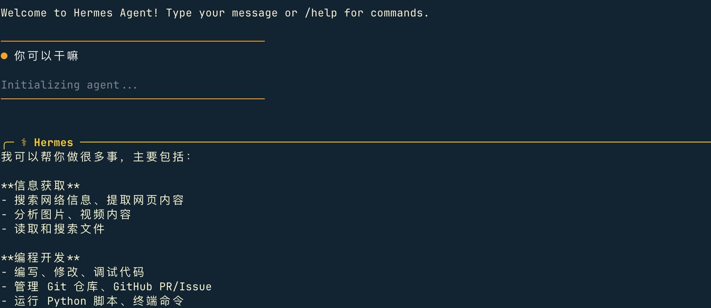

Hermes Agent Installation
Hermes Agent supports the following operating systems:
| Platform | Support Methods |
|---|---|
| macOS | Desktop app (recommended) / Command-line installation |
| Windows | Desktop application (recommended) / PowerShell script / WSL2 |
| Linux | One-click command-line installation |
| Android (Termux) | Command-line installation) |
System configuration:
| Project | Minimum Requirements | Recommended Configuration |
|---|---|---|
| Operating system | Linux / macOS / WSL2 | Ubuntu 22.04+ / macOS 14+ / WSL2 (Ubuntu) |
| Python | 3.10+ | 3.11 or 3.12 |
| Memory | 4 GB | 8 GB+ |
| Disk space | 2 GB | 5 GB+ (reserved for model cache and logs) |
| Networking | Can access LLM API | Stable internet connection |
Windows userRequiredUsage WSL2（Windows Subsystem for Linux），Hermes Agent 目beforeNoNative support Windows Command line.
Installation method selection
Method 1: Hermes Desktop (Recommended for macOS / Windows)
Hermes Desktop is the official desktop application that provides a graphical interface on top of the command-line tool—including a visual Dashboard, Profile manager, skill browser, etc. When installing the desktop app, the command-line tool is also installed (hermescommand), and the two can be used together.
Download and installation
- Visit Official Websitehermes-agent.nousresearch.com
- ClickDownload For...Button
- Run the downloaded installer and follow the prompts to complete the installation.

After downloading, double-click to install:

After installation is complete,hermesThe command is automatically added to the system PATH and can be used directly in the terminal.
The entire panel is shown below:

Method 2: Command-line Installation (Linux / macOS / WSL2)
Open a terminal and run the following command to automatically complete the installation:
curl -fsSL https://get.hermes-agent.nousresearch.com | bash
Windows (native PowerShell):
iex (irm https://hermes-agent.nousresearch.com/install.ps1)
The script will automatically detect the system environment and install all dependencies.
The above command will automatically complete all the following steps:
- Detect and install missing dependencies (uv, Python 3.11, Node.js v22, ripgrep, ffmpeg)
- Clone the Hermes Agent repository to
~/.hermes/hermes-agent/ - Create an isolated Python virtual environment
- Configure Global
hermesCommand - Guide you through the LLM provider configuration

Windows system instructions: Native Windows environments are not supported. Please install WSL2 first, then run the above command in the WSL2 terminal.
If you have installed OpenClaw, you can also import the configuration directly:

Select "do not import" here, and entern, go to model settings and select the first quick setup:

Next, select More providers, the second-to-last item:

Here you can choose more domestic or international large models:

Next, we useByteArk Coding Plan, so the choice isCustomer endpoint, which means customizing the API address and API key.
Base URL: set ByteArk, a tool compatible with the OpenAI API protocol:https://ark.cn-beijing.volces.com/api/coding/v3
Set the API key and supported large models, for exampleark-code-latest。
After installation, refresh the Shell:
source ~/.bashrc # Bash 用户 # 或 source ~/.zshrc # Zsh 用户
Verify successful installation:
hermes --version
Use the following command to start the agent conversation:
hermes

Instructions for file installation location:
| Installation method | Code Location | hermesCommand |
Data Directory |
|---|---|---|---|
| pip install | Python site-packages | ~/.local/bin/hermes |
~/.hermes/ |
| git installation script (user-level) | ~/.hermes/hermes-agent/ |
~/.local/bin/hermes(symbolic link) |
~/.hermes/ |
| root mode (sudo installation) | /usr/local/lib/hermes-agent/ |
/usr/local/bin/hermes |
/root/.hermes/ |
other extensionsReference documents:hermes-agent.nousresearch.com/docs/getting-started